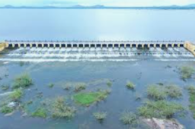

Kaveripakkam is a town located within the Ranipet district of Tamil Nadu, India. It's a town panchayat and also a revenue block within the district. Kaveripakkam is known for its large lake, one of the largest in the district and second largest in Tamil Nadu. The district headquarters, where Ranipet is located, is also part of the same region, making them both part of the same administrative area.